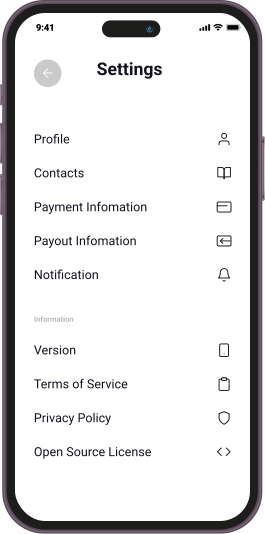
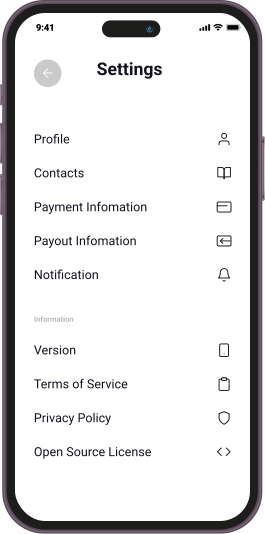

Log out of all devices!
Most applications have the option for you to log out of every device your account is signed in to when your account is compromised! Scroll down to find the log option to safe guard you account!
Most applications have the option for you to log out of every device your account is signed in to when your account is compromised! Scroll down to find the log option to safe guard you account!
